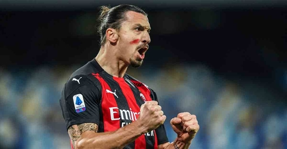
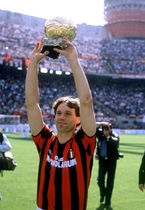
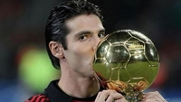
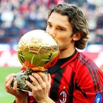
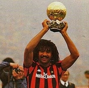

AC Milan was founded in 1899 and is one of the best clubs in the world, having won the Champions League title 7 times and Serie a 18 times

The most renowned AC Ballon d'or winners

Marco Van Basten played for AC Milan during 1987-1995

Kaka played for AC Milan during 2003-2009

Andrey Shevchenko played for AC Milan during 1999-2006

Gullit played for AC Milan during 1987-1994
"We will be a team of devils. Our colours will be red like fire and black like the fear we will invoke in our opponents." AC Milan was founded as Milan Foot-Ball and Cricket Club in 1899 by English expatriates Alfred Edwards and Herbert Kilpin.
Alfred Edwards, 1899
Call to action! It's time!
Sign up for our product by clicking that button right over there!